전파전자기능사(구) (2009-03-29 기출문제)
1과목: 임의 구분
1. 다음 중 무선수신기에서 고주파 전력을 전송하기 위한 급전선의 필요조건으로 적합하지 않은 것은?
- 급전선의 파동 임피던스가 커야 한다.
- 급전선의 전송효율이 좋아야 한다.
- 송신용의 경우 절연내력이 커야 한다.
- 타 전파의 유도방해를 받거나 주지 말아야 한다.
(정답률: 알수없음)

2. 다음 중 수신기의 성능을 나타내는 척도가 아닌 것은?
- 변조도
- 감도
- 선택도
- 충실도
(정답률: 알수없음)
3. 다음 중 전리층의 잉계주파수 fc 의 단위로 가장 적합한 것은?
- [Hz]
- [A]
- [V]
- [Ω]
(정답률: 알수없음)
4. 슈퍼 헤테로다인 수신기에서 고주파 증폭단을 부가했을 때의 장점으로 적합하지 않은 것은?
- 강도의 개선
- 영상주파수 선택도의 개선
- 근접주파수 선택도의 개선
- 국부발진기의 출력이 안테나로 복사되는 것을 억압
(정답률: 알수없음)
5. 저주파 증폭기의 출력에서 기본파의 전압이 50[V], 제2고주파의 전압이 4[V], 제3고조파의 전압이 3[V]일 때 왜율은 몇 [%] 인가?
- 1[%]
- 5[%]
- 10[%]
- 20[%]
(정답률: 알수없음)
6. BFSK에서 반송파 간 위상차(라디안)는?
- 2π
- π
- π/2
- π/4
(정답률: 알수없음)
7. 다음 중 CDMA 방식의 특징에 대한 설명으로 적합하지 않은 것은?
- 가입자 수용 용량이 크다.
- 비화성이 우수하다.
- 정밀한 송신전력 제어가 필요하지 않다.
- 수신측에서 동기를 위한 하드웨어가 매우 복잡하다.
(정답률: 알수없음)
8. 디지털 부호에 대응하여 반송파의 진폭과 위상은 그대로 두고 주파수를 변화시키는 변조방식은?
- ASK
- DPSK
- QAM
- FSK
(정답률: 알수없음)
9. 다음 중 정보 비트의 전송률이 일정할 때 채널 대역폭이 가장 작은 변조방식은?
- 2진 ASK
- 2진 FSK
- QPSK
- 8진 PSK
(정답률: 알수없음)
10. 다음 중 수정필터(X-tal filter)의 용도로 가장 적합한 것은?
- 근접 주파수의 혼신 제거
- 영상 주파수의 혼신 제거
- 전원회로의 맥동전압 제거
- 상호변조에 의한 혼신 제거
(정답률: 알수없음)
11. 다음 중 주로 HF대 이하의 전계강도 측정하기 위하여 사용되는 안테나로 가장 적합한 것은?
- 루프 안테나
- 의사 안테나
- 다이폴 안테나
- 수직 접지 안테나
(정답률: 알수없음)
12. 4진 PSK 변조방식에서 변조속도가 1200[baud]일 때 정보 신호 속도는 몇 [bps]인가?
- 1200[bps]
- 2400[bps]
- 4800[bps]
- 9600[bps]
(정답률: 알수없음)
13. 무선송신기에서 전송된 신호파를 어느 정도까지 충실히 재현할 수 있는 가를 나타내는 능력을 무엇이라 하는가?
- 감도
- 선택도
- 충실도
- 잡음지수
(정답률: 알수없음)
14. 다음 중 FM파를 복조시키면서 충력성 잡음을 억제하여 리미터 작용을 하는 것은?
- 비(ratio)검파기
- 포스터실리 검파기
- 스롭(Slope)검파기
- 다이오드검파기
(정답률: 알수없음)
15. 오실로스코프로 파형을 측정한 결과 다음과 같을 때 이 펄스파의 주파수는 몇 [kHz] 인가?
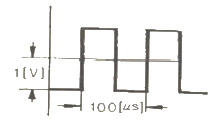
- 10[kHz]
- 20[kHz]
- 30[kHz]
- 100[kHz]
(정답률: 알수없음)
16. 다음 중 전파의 성질에 대한 설명으로 적합하지 않은 것은?
- 횡파이다.
- 직진, 반사, 굴절 등의 현상을 갖는다.
- 자유공간에서의 전파속도는 3×108[m/s]이다.
- 위상속도와 군속도의 곱은 광속과 같다.
(정답률: 알수없음)
17. 급전선과 안테나가 임피던스 정합 되어 있을 때, 급전선상에 존재하는 것은?
- 정재파
- 진행파
- 직류파
- 반사파
(정답률: 알수없음)
18. 위성통신용 지구국의 기본적인 구성이 아닌 것은?
- 송신계
- 수신계
- 안테나계
- 연료전지계
(정답률: 알수없음)
19. 태양 폭발에 수반하여 방출되는 다량의 자외선에 의해 단파대 수신 전계 강도가 갑자기 저하되어 수신 불능상태가 되는 현상은?
- 자기폭풍
- 에코현상
- 페이딩 현상
- 델린저 현상
(정답률: 알수없음)
20. 야간의 전리층 변화상태를 옳게 설명한 것은?
- 전리층의 밀도는 강해지고 높이는 높아진다.
- 전리층의 밀도는 강해지고 높이는 낮아진다.
- 전리층의 밀도는 약해지고 높이는 높아진다.
- 전리층의 밀도는 약해지고 높이는 낮아진다.
(정답률: 알수없음)
2과목: 임의 구분
21. 다음 문장의 ( ) 안에 알맞은 것은?
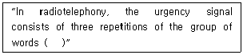
- MAYDAY
- XXX
- PAN PAN
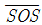
(정답률: 알수없음)
22. 다음 문장의 ( ) 안에 알맞은 것은?
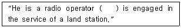
- which
- who
- whose
- this
(정답률: 알수없음)
23. 알파벳 통화표의 발음에 대한 강세를 밑줄로 표시한 것 중 틀린 것은?
- J : JEW LEE ETT
- K : KEY LOH
- P : PAH PAH
- T : TANG GO
(정답률: 알수없음)
24. 다음 문장의 밑줄 친 부분의 적합한 용어 표현은?
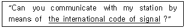
- 국제 서식
- 국제 통신서
- 국제 양식
- 국제 약호
(정답률: 알수없음)
25. 다음 영문의 ( ) 안에 적합한 단어는?
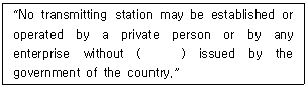
- operator
- identify
- password
- license
(정답률: 알수없음)
26. 다음 문장을 나타내는 적합한 용어는?
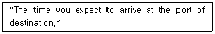
- APD
- ET
- TAD
- ETA
(정답률: 알수없음)
27. 숫자 통화표에 의한 “0”의 발음 표기는?
- NADAZERO
- NONE
- ZERO
- OZERO
(정답률: 알수없음)
28. 다음 문장의 밑줄 친 부분의 해석으로 적합한 것은?
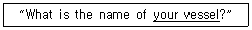
- 귀국
- 귀선
- 송신전문
- 수신전문
(정답률: 알수없음)
29. 다음 문장의 답변으로 ( ) 안에 적합한 것은?
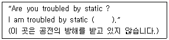
- not
- nil
- bad
- ever
(정답률: 알수없음)
30. 다음 IMO 영문의 해석으로 적합한 것은?
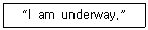
- 본선은 수중에 있음
- 본선은 항해 중임
- 본선은 항로에 있음
- 본선은 항로 아래에 있음
(정답률: 알수없음)
31. 다음 중 ( ) 안에 들어갈 적합한 단어는?
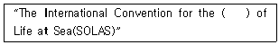
- Distres
- Rescue
- Urgency
- Safety
(정답률: 알수없음)
32. 다음 중 “국제공중전보” 용어의 적합한 영역은?
- Domestic Telegram Service
- International Telephone Service
- International Public Telegram Service
- International Public Telex Service
(정답률: 알수없음)
33. 무선전화 “MAYDAY" 와 같은 무선전신의 약어는?
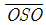
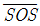
- XXX
- TTT
(정답률: 알수없음)
34. 다음 문장 중 밑줄 친 부분의 가장 적합한 해석은?
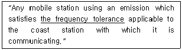
- 주파수 범위
- 주파수 혼신한도
- 주파수 상호간섭
- 주파수 허용편차
(정답률: 알수없음)
35. 다음 문장의 ( ) 안에 적합한 주파수는?
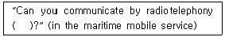
- 8364[kHz]
- 2182[kHz]
- 2091[kHz]
- 500[kHz]
(정답률: 알수없음)
36. 다음 문장의 가장 적합한 국역은?
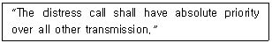
- 조난통신은 모든 다른 수신보다 앞선다.
- 조난통신은 모든 다른 전송보다 상대적인 순위를 가져야 한다.
- 조난은 다른 통신보다 상대적으로 취급하여야 한다.
- 조난호출은 다른 모든 전송보다 절대적 우선권을 가져야 한다.
(정답률: 알수없음)
37. 다음 중 ITU의 목적에 해당하지 않는 것은?
- To maintain the international cooperation
- To promote the development of technical facilities
- To harmonize the actions of nations
- To reserve the human rights
(정답률: 알수없음)
38. 다음 중 문장의 ( ) 안에 가장 적합한 것은?
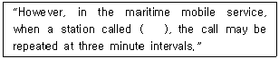
- can not appear
- does not reply
- will not receive
- could not send
(정답률: 알수없음)
39. 다음 문장이 나타내는 용어는?
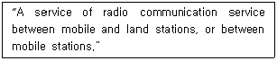
- mobile service
- mobile station
- international service
- radio communication
(정답률: 알수없음)
40. 알파벳 통화표에 의한 송신할 문자와 사용단어가 다른 것은?
- X : X-ray
- Z : Zulu
- W : Whiskey
- V : Victory
(정답률: 알수없음)
3과목: 임의 구분
41. 다음 중 전파법에 따라 준수하여야 할 통신보안에 관한 사항에 속하지 않는 것은?
- 통신보안교육 등에 관한 사항
- 통신보안책임자의 지정에 관한 사항
- 통신보안 위반시 처벌에 관한 사항
- 무선국 허가시 통신보안 조치에 관한 사항
(정답률: 알수없음)
42. 일반적인 무선통신업무에 종사하는 자는 몇 년마다 1회의 통신보안교육을 받아야 하는가?
- 1년
- 3년
- 5년
- 7년
(정답률: 알수없음)
43. 다음 중 GMDSS 적용을 받는 선박이 갖추어야 하는 무선 설비에 속하지 않는 것은?
- 초단파대 무선전화
- 중단파대 디지털 선택 호출장치
- 수색구조용 레이다 트랜스폰더
- 위성 비상위치 지시용 무선표지설비
(정답률: 알수없음)
44. 300[㎒] ~ 3000[㎒] 주파수대의 약칭은 무엇인가?
- HF
- VHF
- SHF
- UHF
(정답률: 알수없음)
45. 다음 ( ) 안에 들어갈 내용으로 가장 적합한 것은?
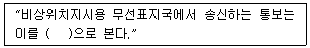
- 조난통신
- 안전통신
- 긴급통신
- 비상통신
(정답률: 알수없음)
46. 다음 중 수신설비가 충족하여야 할 조건에 해당하지 않는 것은?
- 정합이 충분할 것
- 선택도가 클 것
- 내부잡음이 적을 것
- 강도는 낮은 신호입력에서도 양호할 것
(정답률: 알수없음)
47. 다음 중 무선국을 개설할 수 있는 자는?
- 외국의 법인
- 외국정부의 대표자
- 대한민국의 국적을 가지지 아니한 자
- 전파법을 위반하여 금고이상의 형의 집행유예를 선고 받고 그 유예기간이 종료된 자
(정답률: 알수없음)
48. 다음 중 해상이동업무에 있어서의 통신의 우선순위가 가장 높은 것은?
- 조난통신
- 긴급통신
- 안전통신
- 비상통신
(정답률: 알수없음)
49. 다음 중 전파법의 궁극적인 목적은?
- 전파의 효율 개선
- 전파의 기술적 관리
- 전파에 관한 부가가치 창출
- 공공복리의 증진에 이바지
(정답률: 알수없음)
50. 다음 중 특정한 주파수를 이용할 수 있는 권리를 특정인에게 주는 것을 말하는 것은?
- 주파수분배
- 주파수할당
- 주파수지정
- 주파수재배치
(정답률: 알수없음)
51. 다음 중 방송통신위원회가 무선국의 폐지를 반드시 명하여야 하는 것은?
- 전파사용료를 내지 아니한 경우
- 무선설비의 기술기준이 적합하지 아니한 경우
- 통신보안에 관한 사항을 지키지 아니한 경우
- 거짓이나 그 밖의 부정한 방법으로 무선국의 개설허가를 받는 경우
(정답률: 알수없음)
52. 다음 중 전파감시 업무의 범위에 속하지 않는 것은?
- 미약한 전파의 전계강도 측정
- 혼신을 일으키는 전파의 탐지
- 무선국에서 사용하고 있는 주파수의 편차 측정
- 무선국에서 사용하고 있는 주파수의 대역폭 측정
(정답률: 알수없음)
53. 다음 중 형식등록을 하여야 하는 무선설비의 기기는?
- 경보자동전화장치
- 디지털선택호출전용수신기
- 해상이동전화용 무선설비의 기기
- 위성비상위치지시용 무선표지설비의 기기
(정답률: 알수없음)
54. 다음 ( ) 안에 들어갈 내용으로 가장 적합한 것은?
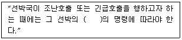
- 선장
- 갑판장
- 책임자
- 통신장
(정답률: 알수없음)
55. 다음 중 ITU의 법률문서에 해당하지 않는 것은?
- 업무규칙
- 국제전기통신협약
- 국제무선통신규칙
- 국제전기통신연합헌장
(정답률: 알수없음)
56. 대외비 이하의 통신내용을 비닉할 목적으로 특정용어를 문자・숫자・기호 등으로 변환하여 수록한 문서나 도구를 말하는 것은?
- 암호자재
- 약호자재
- 음어자재
- 약어자재
(정답률: 알수없음)
57. 다음 중 전파이용 기술의 표준화에 관한 사업 등을 효율적으로 수행하기 위하여 설립한 것은?
- 한국전파진흥원
- 전파정책심의위원회
- 한국전파진흥협회
- 한국정보통신기술협회
(정답률: 알수없음)
58. 전자파적합등록의 인증 신청은 누구에게 하는가?
- 전파관리국장
- 전파연구소장
- 무선국 관리사업단장
- 방송통신위원회 위원장
(정답률: 알수없음)
59. 다음 중 무선국의 정의로 가장 적합한 것은?
- 송・수신 장치 및 공중선계의 총체를 말한다.
- 송신장치와 수신장치를 설치한 곳을 말한다.
- 무선설비와 무선설비를 조작하는 자의 총체를 말한다.
- 무선통신을 행하기 위하여 무선설비를 설치한 곳을 말한다.
(정답률: 알수없음)
60. 국제전기통신업무를 취급하는 제4종국 선박국의 1일 운용의무시간은?
- 상시
- 16시간
- 8시간
- 4시간 이하
(정답률: 알수없음)